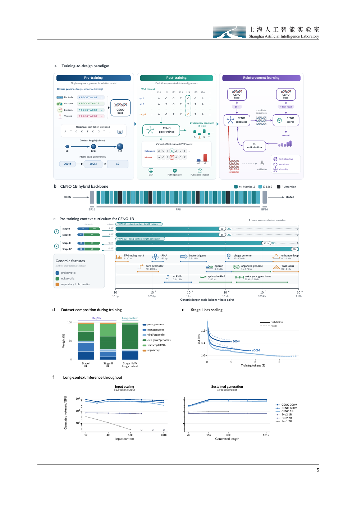
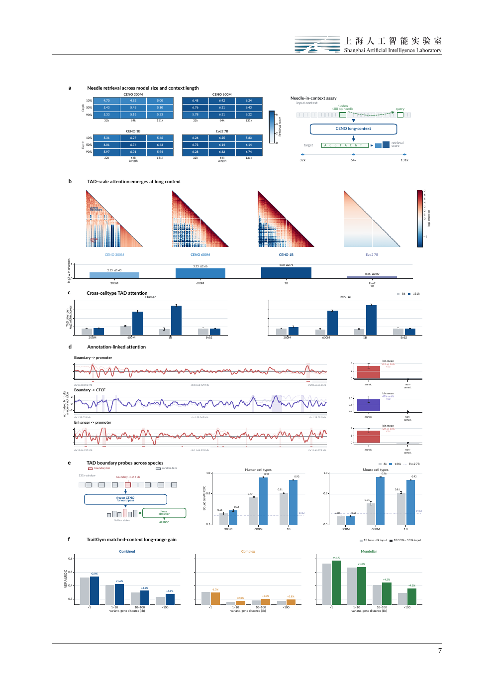

Technical report · Genome world model
CENO: long-context genomic foundation models for evolutionary sequence interpretation and regulatory design
A family of autoregressive DNA models that preserve nucleotide-resolution grammar while extending usable context to regulatory and chromatin scales, connecting pretraining, evolutionary post-training, and functional sequence design in one framework.
Interactive schematic
Sequence, structure, evolution, design
long DNA tracks · chromatin-like contacts · distal routing
Overview
From local DNA syntax to megabase-scale genomic reasoning
Real genomic function is rarely determined by short local fragments alone. Enhancers can act far from target genes, chromatin folds into three-dimensional structures, and noncoding variants may affect gene expression through spatial contacts. CENO targets these long-range regulatory relationships by modeling sequence, structure, evolution, and function at megabase scale.
The report introduces a training-to-design framework: single-sequence long-context pretraining builds the genomic backbone, packed multiple-sequence-alignment post-training adds evolutionary constraint, and supervised plus reinforcement learning adapts the model toward functional regulatory sequence generation.
Method
A three-stage route for genome foundation modeling
DNA tokens
Causal hybrid backbone
MSA post-training
Variant likelihood deltas
Regulatory sequence candidates
Long context
Million-base context becomes biological signal, not just a larger input box
Distant retrieval
CENO models retain synthetic DNA needle-retrieval scores above threshold across 32k, 64k, and 131k contexts.
TAD-scale attention
Long-context continuation increases within/across-boundary attention in representative chromatin-domain loci.
Frozen-state probes
Linear probes over frozen states recover TAD boundary information across human and mouse settings.
Distance-aware VEP gains
TraitGym improvements grow with variant-gene distance, with the largest gains beyond 100 kb.
Variant interpretation
Post-training connects current sequence grammar with evolutionary constraint
Design
From reading genomes to writing experimentally testable regulatory sequences
Figures
Key visuals from the technical report


Paper